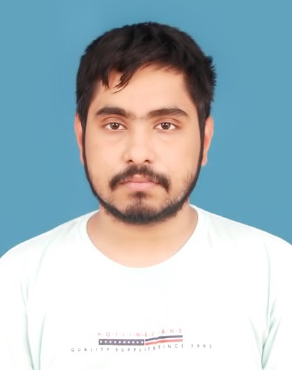

About

I am a PhD student in the Department of Mathematics at IIT Madras, working under the supervision of Dr. Ramesh Kasilingam, and a Prime Minister’s Research Fellow (PMRF, 9th cycle, 2022). My research interests lie in Topology and Geometry.